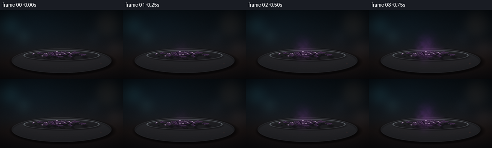
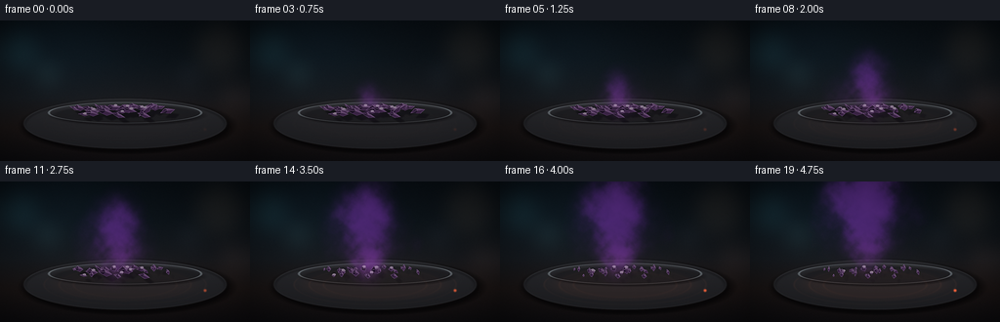
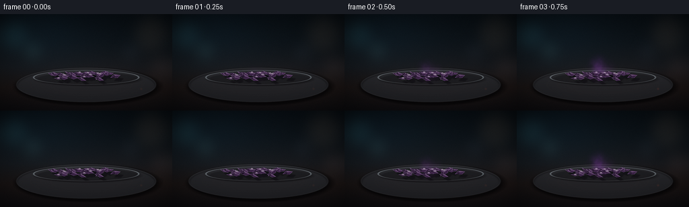
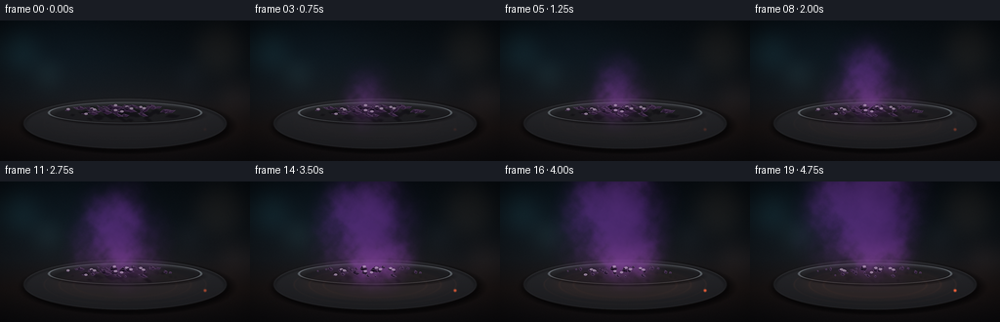
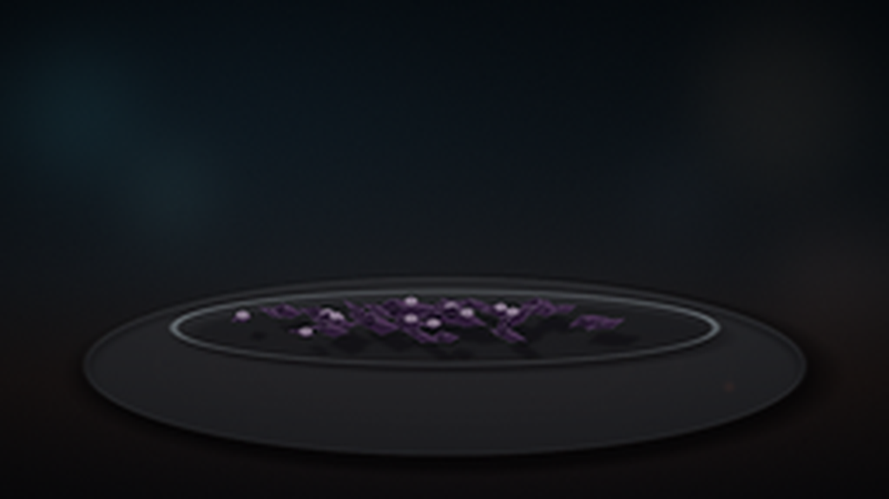
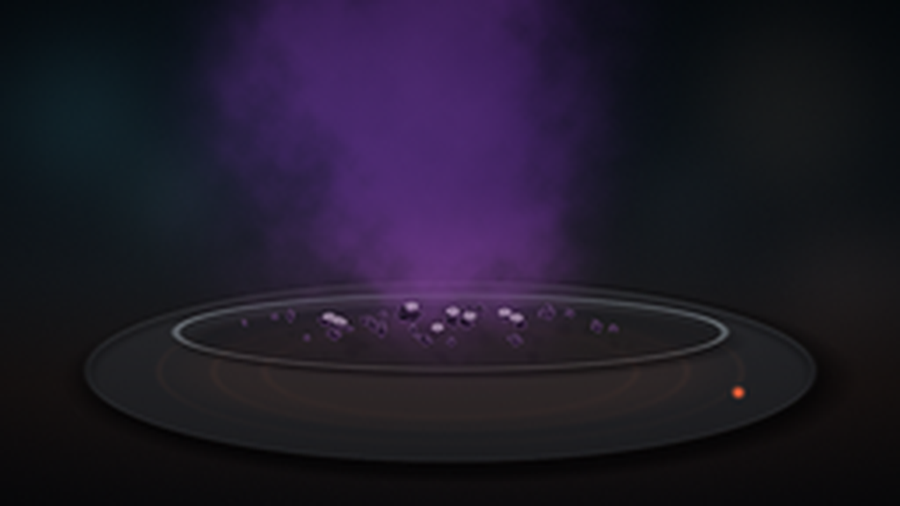
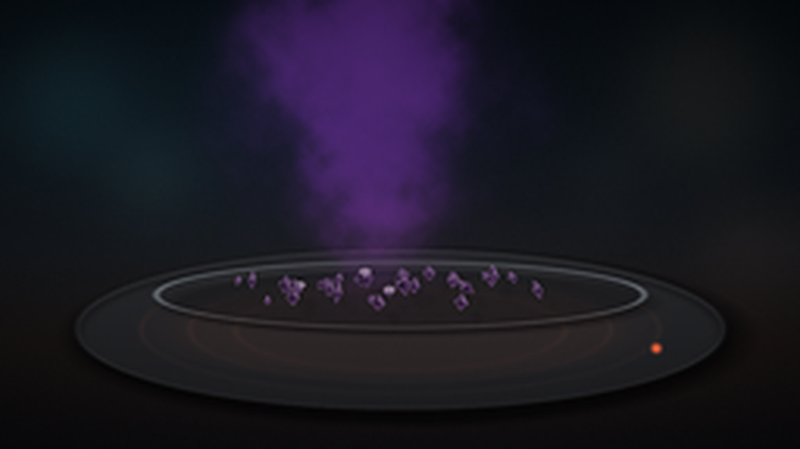
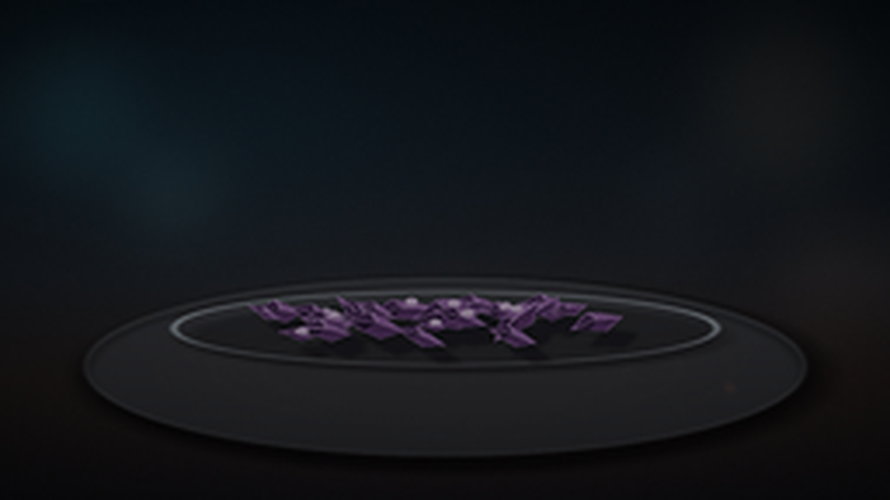
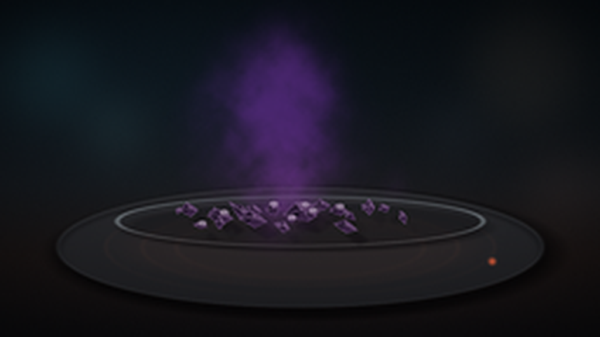

CODING AGENTS AS PIXEL WORLD MODELS
traex/DeepSeek-V4.1-Flash · phygen_118
点击播放 · 原生 RGB 像素
逐轮保存的候选
回放视频、检查图与代码变化。
每份候选均可单独播放。实际图片检查记录在下方工具轨迹中。
候选 01播放与检查图
点击播放 · 原生 RGB 像素


展开代码变化
--- 上一保存版本
+++ 本次保存版本
@@ -0,0 +1,495 @@
+"""Procedural macro timelapse of iodine crystals subliming on a warm stage."""
+
+from pathlib import Path
+import json
+
+import numpy as np
+from PIL import Image, ImageDraw, ImageFilter
+from scipy import ndimage
+
+import artifact_io
+
+
+ROOT = Path(__file__).resolve().parent
+SPEC = json.loads((ROOT / "task_spec.json").read_text())
+W, H = SPEC["width"], SPEC["height"]
+N, FPS = SPEC["frames"], SPEC["fps"]
+SS = 4
+RW, RH = W * SS, H * SS
+RNG = np.random.default_rng(118_2026)
+
+
+def smoothstep(a, b, x):
+ x = np.clip((x - a) / (b - a), 0.0, 1.0)
+ return x * x * (3.0 - 2.0 * x)
+
+
+def mix(a, b, t):
+ return a + (b - a) * t
+
+
+def fbm_texture(shape, seed, base=(7, 12), octaves=6, persistence=0.53):
+ """Smooth, non-periodic fractal value texture at render resolution."""
+ h, w = shape
+ rng = np.random.default_rng(seed)
+ out = np.zeros(shape, dtype=np.float32)
+ weight = 1.0
+ total = 0.0
+ for octave in range(octaves):
+ gh = max(3, int(base[0] * 2**octave))
+ gw = max(4, int(base[1] * 2**octave))
+ grid = rng.random((gh, gw)).astype(np.float32)
+ layer = ndimage.zoom(grid, (h / gh, w / gw), order=3, mode="reflect")
+ layer = layer[:h, :w]
+ out += layer * weight
+ total += weight
+ weight *= persistence
+ out /= total
+ lo, hi = np.percentile(out, (1.0, 99.0))
+ return np.clip((out - lo) / (hi - lo), 0.0, 1.0)
+
+
+def over(image, color, alpha):
+ alpha = np.clip(alpha, 0.0, 1.0)[..., None]
+ color = np.asarray(color, dtype=np.float32)
+ return image * (1.0 - alpha) + color * alpha
+
+
+def screen(image, color, alpha):
+ alpha = np.clip(alpha, 0.0, 1.0)[..., None]
+ color = np.asarray(color, dtype=np.float32)
+ lit = 255.0 - (255.0 - image) * (255.0 - color) / 255.0
+ return image * (1.0 - alpha) + lit * alpha
+
+
+def composite(image, *layers):
+ base = Image.fromarray(np.clip(image, 0, 255).astype(np.uint8)).convert("RGBA")
+ for layer in layers:
+ base.alpha_composite(layer)
+ return np.asarray(base, dtype=np.float32)[..., :3]
+
+
+def ellipse_alpha(cx, cy, rx, ry, feather=1.4):
+ yy, xx = np.mgrid[:RH, :RW]
+ d = ((xx - cx) / rx) ** 2 + ((yy - cy) / ry) ** 2
+ edge = np.minimum(rx, ry)
+ return np.clip((1.0 - d) * edge / feather + 0.5, 0.0, 1.0)
+
+
+def ellipse_ring(cx, cy, rx, ry, width, feather=1.0):
+ yy, xx = np.mgrid[:RH, :RW]
+ d = np.sqrt(((xx - cx) / rx) ** 2 + ((yy - cy) / ry) ** 2)
+ scale = min(rx, ry)
+ ring = np.clip(1.0 - np.abs(d - 1.0) * scale / (width * 0.5), 0.0, 1.0)
+ if feather > 1.0:
+ ring = ndimage.gaussian_filter(ring, feather)
+ return ring
+
+
+def poly_mask(points):
+ mask = Image.new("L", (RW, RH), 0)
+ ImageDraw.Draw(mask).polygon([(float(x), float(y)) for x, y in points], fill=255)
+ return np.asarray(mask, dtype=np.float32) / 255.0
+
+
+def make_background():
+ yy, xx = np.mgrid[:RH, :RW]
+ u = xx / (RW - 1)
+ v = yy / (RH - 1)
+
+ stops = np.array([0.0, 0.28, 0.55, 0.76, 1.0])
+ colors = np.array(
+ [
+ [9, 15, 20],
+ [13, 19, 24],
+ [20, 23, 27],
+ [24, 20, 20],
+ [13, 13, 16],
+ ],
+ dtype=np.float32,
+ )
+ image = np.empty((RH, RW, 3), dtype=np.float32)
+ for channel in range(3):
+ image[..., channel] = np.interp(v, stops, colors[:, channel])
+
+ # A cool studio source from the upper left and a faint warm bounce at the bench.
+ cool = np.exp(-(((u - 0.18) / 0.30) ** 2 + ((v - 0.20) / 0.34) ** 2))
+ warm = np.exp(-(((u - 0.56) / 0.43) ** 2 + ((v - 0.76) / 0.22) ** 2))
+ image += cool[..., None] * np.array([3.0, 8.0, 11.0], dtype=np.float32)
+ image += warm[..., None] * np.array([9.0, 4.0, 2.0], dtype=np.float32)
+
+ # Out-of-focus lab lights add depth without competing with the specimen.
+ bokeh = Image.new("RGB", (RW, RH), (0, 0, 0))
+ bdraw = ImageDraw.Draw(bokeh)
+ for cx, cy, rx, ry, color in [
+ (0.08, 0.22, 0.07, 0.13, (17, 43, 46)),
+ (0.19, 0.38, 0.04, 0.08, (28, 51, 50)),
+ (0.88, 0.20, 0.09, 0.17, (40, 31, 23)),
+ (0.76, 0.39, 0.035, 0.07, (23, 26, 31)),
+ (0.94, 0.56, 0.06, 0.11, (36, 24, 20)),
+ ]:
+ box = (
+ (cx - rx) * RW,
+ (cy - ry) * RH,
+ (cx + rx) * RW,
+ (cy + ry) * RH,
+ )
+ bdraw.ellipse(box, fill=color)
+ bokeh = bokeh.filter(ImageFilter.GaussianBlur(36 * SS / 4))
+ image += np.asarray(bokeh, dtype=np.float32) * 0.42
+
+ # Fine grain and a soft optical vignette.
+ grain = RNG.normal(0.0, 1.0, (RH, RW, 1)).astype(np.float32)
+ grain = ndimage.gaussian_filter(grain, (0.55, 0.55, 0.0))
+ image += grain * 1.35
+ r = np.sqrt(((u - 0.5) / 0.72) ** 2 + ((v - 0.52) / 0.70) ** 2)
+ image *= np.clip(1.04 - 0.28 * r**1.65, 0.60, 1.04)[..., None]
+ return np.clip(image, 0, 255)
+
+
+BACKGROUND = make_background()
+VAPOR_TEXTURE = fbm_texture((RH, RW), 11831, base=(5, 9), octaves=7, persistence=0.57)
+FINE_TEXTURE = fbm_texture((RH, RW), 11832, base=(23, 40), octaves=5, persistence=0.52)
+
+
+def build_crystals():
+ specs = []
+ cx, cy = 0.475 * RW, 0.641 * RH
+ for _ in range(31):
+ radius = np.sqrt(RNG.uniform(0.03, 1.0))
+ theta = RNG.uniform(0.0, 2.0 * np.pi)
+ x = cx + np.cos(theta) * radius * 0.215 * RW
+ y = cy + np.sin(theta) * radius * 0.036 * RH
+ length = RNG.uniform(0.018, 0.052) * RW * (1.18 - 0.35 * radius)
+ width = length * RNG.uniform(0.30, 0.50)
+ angle = RNG.normal(0.0, 0.32)
+ if RNG.random() < 0.23:
+ angle += RNG.choice([-1.0, 1.0]) * RNG.uniform(0.35, 0.65)
+ specs.append(
+ {
+ "x": x,
+ "y": y,
+ "length": length,
+ "width": width,
+ "angle": angle,
+ "threshold": RNG.uniform(0.04, 0.62),
+ "loss": RNG.uniform(0.52, 0.84),
+ "spark": RNG.uniform(0.0, 1.0),
+ }
+ )
+
+ specs.append(
+ {
+ "x": 0.455 * RW,
+ "y": 0.620 * RH,
+ "length": 0.072 * RW,
+ "width": 0.025 * RW,
+ "angle": -0.08,
+ "threshold": 0.18,
+ "loss": 0.58,
+ "spark": 0.9,
+ }
+ )
+ specs.append(
+ {
+ "x": 0.518 * RW,
+ "y": 0.635 * RH,
+ "length": 0.055 * RW,
+ "width": 0.020 * RW,
+ "angle": 0.30,
+ "threshold": 0.32,
+ "loss": 0.69,
+ "spark": 0.7,
+ }
+ )
+ specs.sort(key=lambda item: item["y"])
+ return specs
+
+
+CRYSTALS = build_crystals()
+
+
+def crystal_shrink(spec, t):
+ local = float(smoothstep(spec["threshold"], min(1.0, spec["threshold"] + 0.50), t))
+ return max(0.0, 1.0 - spec["loss"] * local)
+
+
+def crystal_polygon(spec, shrink):
+ x, y = spec["x"], spec["y"]
+ length = spec["length"] * shrink
+ width = spec["width"] * (0.90 + 0.10 * shrink)
+ ca, sa = np.cos(spec["angle"]), np.sin(spec["angle"])
+ local = np.array(
+ [
+ [-0.58, 0.07],
+ [-0.18, -0.48],
+ [0.11, -0.36],
+ [0.54, -0.02],
+ [0.14, 0.49],
+ [-0.20, 0.31],
+ ],
+ dtype=np.float32,
+ )
+ local[:, 0] *= length
+ local[:, 1] *= width
+ world = np.empty_like(local)
+ world[:, 0] = x + local[:, 0] * ca - local[:, 1] * sa
+ world[:, 1] = y + local[:, 0] * sa + local[:, 1] * ca
+ ridge_local = np.array([0.00, -0.13], dtype=np.float32)
+ ridge = np.array(
+ [
+ x + ridge_local[0] * length * ca - ridge_local[1] * width * sa,
+ y + ridge_local[0] * length * sa + ridge_local[1] * width * ca,
+ ],
+ dtype=np.float32,
+ )
+ return world, ridge
+
+
+def draw_crystals(t):
+ color_layer = Image.new("RGBA", (RW, RH), (0, 0, 0, 0))
+ shadow_layer = Image.new("RGBA", (RW, RH), (0, 0, 0, 0))
+ aura_layer = Image.new("RGBA", (RW, RH), (0, 0, 0, 0))
+ draw = ImageDraw.Draw(color_layer)
+ sdraw = ImageDraw.Draw(shadow_layer)
+ adraw = ImageDraw.Draw(aura_layer)
+
+ for spec in CRYSTALS:
+ shrink = crystal_shrink(spec, t)
+ if shrink < 0.045:
+ continue
+ poly, ridge = crystal_polygon(spec, shrink)
+ p = [tuple(point) for point in poly]
+
+ shadow = [(x + 5.0 * SS, y + 5.0 * SS) for x, y in p]
+ sdraw.polygon(shadow, fill=(4, 2, 8, int(105 * shrink)))
+
+ aura_alpha = int(32 * smoothstep(0.18, 0.95, t) * (1.0 - 0.35 * shrink))
+ if aura_alpha > 0:
+ adraw.polygon(p, fill=(103, 44, 137, aura_alpha))
+
+ # Faceted iodine: nearly black body with restrained violet and bronze luster.
+ facet1 = [p[0], p[1], tuple(ridge)]
+ facet2 = [p[1], p[2], p[3], tuple(ridge)]
+ facet3 = [p[0], tuple(ridge), p[5]]
+ facet4 = [tuple(ridge), p[3], p[4], p[5]]
+ draw.polygon(p, fill=(18, 11, 24, 255))
+ draw.polygon(facet1, fill=(35, 22, 43, 255))
+ draw.polygon(facet2, fill=(69, 45, 77, 255))
+ draw.polygon(facet3, fill=(20, 12, 28, 255))
+ draw.polygon(facet4, fill=(43, 26, 52, 255))
+ draw.line([p[0], tuple(ridge), p[3]], fill=(111, 82, 122, 150), width=max(1, SS // 2))
+ draw.line([p[1], tuple(ridge)], fill=(129, 102, 143, 105), width=max(1, SS // 2))
+ draw.line(p + [p[0]], fill=(84, 58, 96, 165), width=max(1, SS // 2))
+
+ if spec["spark"] > 0.68 and shrink > 0.25:
+ sx, sy = poly[2]
+ draw.ellipse(
+ (sx - 1.7 * SS, sy - 1.0 * SS, sx + 1.7 * SS, sy + 1.0 * SS),
+ fill=(180, 157, 185, 165),
+ )
+
+ shadow_layer = shadow_layer.filter(ImageFilter.GaussianBlur(2.2 * SS / 4))
+ aura_layer = aura_layer.filter(ImageFilter.GaussianBlur(4.2 * SS / 4))
+ return shadow_layer, aura_layer, color_layer
+
+
+def vapor_particles():
+ particles = []
+ for _ in range(86):
+ particles.append(
+ {
+ "x": 0.475 * RW + RNG.normal(0.0, 0.075 * RW),
+ "y": 0.638 * RH + RNG.normal(0.0, 0.018 * RH),
+ "spawn": RNG.uniform(0.00, 0.76),
+ "rise": RNG.uniform(0.40, 0.77) * RH,
+ "drift": RNG.normal(0.0, 0.055 * RW),
+ "radius": RNG.uniform(0.017, 0.040) * RW,
+ "growth": RNG.uniform(0.015, 0.060) * RW,
+ "alpha": RNG.uniform(0.12, 0.35),
+ "phase": RNG.uniform(0.0, 2.0 * np.pi),
+ "frequency": RNG.uniform(2.2, 4.9),
+ "stretch": RNG.uniform(1.0, 1.55),
+ }
+ )
+ return particles
+
+
+VAPOR = vapor_particles()
+
+
+def add_gaussian(field, cx, cy, rx, ry, amplitude):
+ x0 = max(0, int(cx - 3.2 * rx))
+ x1 = min(RW, int(cx + 3.2 * rx) + 1)
+ y0 = max(0, int(cy - 3.2 * ry))
+ y1 = min(RH, int(cy + 3.2 * ry) + 1)
+ if x0 >= x1 or y0 >= y1:
+ return
+ yy, xx = np.mgrid[y0:y1, x0:x1]
+ g = np.exp(-0.5 * (((xx - cx) / rx) ** 2 + ((yy - cy) / ry) ** 2))
+ field[y0:y1, x0:x1] += amplitude * g
+
+
+def vapor_density(t):
+ density = np.zeros((RH, RW), dtype=np.float32)
+ for p in VAPOR:
+ age = t - p["spawn"]
+ if age <= 0:
+ continue
+ fade_in = float(smoothstep(0.0, 0.075, age))
+ x = (
+ p["x"]
+ + p["drift"] * age
+ + 0.024 * RW * np.sin(p["phase"] + p["frequency"] * age)
+ * (0.18 + age)
+ )
+ y = (
+ p["y"]
+ - p["rise"] * age**0.83
+ + 0.007 * RH * np.sin(p["phase"] * 1.7 + p["frequency"] * age)
+ )
+ radius = p["radius"] + p["growth"] * age
+ amp = p["alpha"] * fade_in * (0.60 + 0.55 * t)
+ add_gaussian(density, x, y, radius, radius * p["stretch"], amp)
+
+ # A narrow, translucent thread near the pile gives the cloud a clear source.
+ source = np.exp(
+ -0.5
+ * (
+ ((np.arange(RW)[None, :] - 0.476 * RW) / (0.040 * RW)) ** 2
+ + ((np.arange(RH)[:, None] - 0.626 * RH) / (0.012 * RH)) ** 2
+ )
+ )
+ density += source.astype(np.float32) * (0.13 * smoothstep(0.02, 0.35, t))
+
+ shift = int(round(t * 0.16 * RH))
+ side = int(round(0.014 * RW * np.sin(2.4 * t)))
+ texture = np.roll(VAPOR_TEXTURE, -shift, axis=0)
+ texture = np.roll(texture, side, axis=1)
+ fine = np.roll(FINE_TEXTURE, -int(shift * 0.72), axis=0)
+ density *= 0.34 + 0.98 * texture**1.22
+ density *= 0.68 + 0.52 * fine
+ density = ndimage.gaussian_filter(density, 1.1 * SS / 4)
+ return np.clip(density, 0.0, None)
+
+
+def render_frame(frame_index):
+ t = frame_index / (N - 1)
+ heat = float(smoothstep(0.05, 1.0, t))
+ image = BACKGROUND.copy()
+
+ yy, xx = np.mgrid[:RH, :RW]
+ plate_cx, plate_cy = 0.50 * RW, 0.733 * RH
+ plate_rx, plate_ry = 0.405 * RW, 0.178 * RH
+
+ # Cast shadow and ceramic hotplate.
+ shadow = ellipse_alpha(plate_cx + 0.010 * RW, plate_cy + 0.017 * RH, plate_rx * 1.04, plate_ry * 1.10, 24 * SS / 4)
+ image = over(image, (2, 2, 3), shadow * 0.62)
+ plate = ellipse_alpha(plate_cx, plate_cy, plate_rx, plate_ry, 1.3)
+ image = over(image, (23, 23, 26), plate)
+
+ # Directional sheen across the ceramic top.
+ plate_top = np.clip((yy - (plate_cy - plate_ry)) / (2.0 * plate_ry), 0.0, 1.0)
+ sheen = plate * (0.08 + 0.16 * (1.0 - plate_top))
+ image = screen(image, (76, 79, 82), sheen)
+ rim = ellipse_ring(plate_cx, plate_cy, plate_rx, plate_ry, 3.0 * SS / 4, 1.1)
+ image = screen(image, (105, 109, 112), rim * 0.18)
+ outer_shadow = ellipse_ring(plate_cx, plate_cy + 1.8 * SS, plate_rx, plate_ry, 7.0 * SS / 4, 2.0)
+ image = over(image, (5, 5, 7), outer_shadow * 0.34)
+
+ # Concentric heater coils become warmer and brighter over the timelapse.
+ coil_glow = np.zeros((RH, RW), dtype=np.float32)
+ for ring_index, (fx, fy) in enumerate(((0.80, 0.80), (0.65, 0.65), (0.51, 0.51))):
+ ring = ellipse_ring(
+ plate_cx,
+ plate_cy,
+ plate_rx * fx,
+ plate_ry * fy,
+ (2.0 + 0.55 * ring_index) * SS / 4,
+ 1.0,
+ )
+ coil_glow += ring * (0.62 - 0.08 * ring_index)
+ coil_glow = ndimage.gaussian_filter(coil_glow, 2.0 * SS / 4)
+ image = screen(image, (112, 51, 24), coil_glow * (0.035 + 0.23 * heat))
+ broad_heat = ellipse_alpha(plate_cx, plate_cy, plate_rx * 0.72, plate_ry * 0.60, 38 * SS / 4)
+ image = screen(image, (116, 46, 20), broad_heat * (0.010 + 0.10 * heat))
+
+ # Small indicator light on the front-right of the hotplate.
+ indicator = ellipse_alpha(0.82 * RW, 0.775 * RH, 0.006 * RW, 0.010 * RH, 4 * SS / 4)
+ indicator = ndimage.gaussian_filter(indicator, 2.0 * SS / 4)
+ image = screen(image, (255, 81, 30), indicator * (0.06 + 0.90 * heat))
+
+ # Watch glass: shadow, faint glass tint, and a crisp elliptical rim.
+ glass_cx, glass_cy = 0.50 * RW, 0.656 * RH
+ glass_rx, glass_ry = 0.305 * RW, 0.073 * RH
+ glass_shadow = ellipse_alpha(glass_cx + 0.010 * RW, glass_cy + 0.018 * RH, glass_rx, glass_ry, 10 * SS / 4)
+ image = over(image, (4, 3, 5), glass_shadow * 0.35)
+ glass_fill = ellipse_alpha(glass_cx, glass_cy, glass_rx, glass_ry, 1.2)
+ image = screen(image, (64, 72, 79), glass_fill * 0.045)
+ glass_rim = ellipse_ring(glass_cx, glass_cy, glass_rx, glass_ry, 2.0 * SS / 4, 0.8)
+ image = screen(image, (134, 150, 157), glass_rim * 0.46)
+ upper_rim = glass_rim * np.clip(1.0 - (yy - (glass_cy - glass_ry)) / (1.35 * glass_ry), 0.0, 1.0)
+ image = screen(image, (183, 194, 199), upper_rim * 0.30)
+ lower_rim = glass_rim * np.clip((yy - glass_cy) / (0.95 * glass_ry), 0.0, 1.0)
+ image = screen(image, (165, 99, 77), lower_rim * (0.06 + 0.14 * heat))
+
+ shadow_layer, aura_layer, crystal_layer = draw_crystals(t)
+ image = composite(image, shadow_layer, aura_layer)
+
+ density = vapor_density(t)
+ alpha = 1.0 - np.exp(-density * (0.92 + 0.30 * t))
+ alpha *= 0.78
+ warm = np.exp(-(((yy - 0.65 * RH) / (0.20 * RH)) ** 2))
+ cool = np.exp(-(((xx - 0.27 * RW) / (0.34 * RW)) ** 2 + ((yy - 0.28 * RH) / (0.36 * RH)) ** 2))
+ tex = np.roll(VAPOR_TEXTURE, -int(round(t * 0.10 * RH)), axis=0)
+ vapor_color = np.stack(
+ [
+ 61.0 + 54.0 * warm + 15.0 * tex + 9.0 * cool,
+ 28.0 + 25.0 * warm + 8.0 * tex + 8.0 * cool,
+ 94.0 + 43.0 * warm + 16.0 * tex + 17.0 * cool,
+ ],
+ axis=-1,
+ )
+ image = image * (1.0 - alpha[..., None]) + vapor_color * alpha[..., None]
+
+ # Bloom in the dense violet vapor, then a whisper of forward haze near the pile.
+ bloom = ndimage.gaussian_filter(alpha, 8.5 * SS / 4)
+ image = screen(image, (91, 47, 124), bloom * 0.15)
+ lower_haze = alpha * np.exp(-(((yy - 0.60 * RH) / (0.10 * RH)) ** 2))
+ image = screen(image, (84, 47, 104), lower_haze * 0.10)
+
+ image = composite(image, crystal_layer)
+
+ # Optical finishing: gentle bloom from hot highlights, vignette, and film grain.
+ luma = image.mean(axis=2)
+ highlights = np.clip((luma - 175.0) / 80.0, 0.0, 1.0)
+ glow = ndimage.gaussian_filter(highlights, 12 * SS / 4)
+ image = screen(image, (130, 121, 141), glow * 0.14)
+ vignette = np.clip(1.06 - 0.20 * (((xx - 0.5 * RW) / (0.57 * RW)) ** 2 + ((yy - 0.52 * RH) / (0.60 * RH)) ** 2), 0.72, 1.04)
+ image *= vignette[..., None]
+ frame_grain = RNG.normal(0.0, 0.72, (RH, RW, 1)).astype(np.float32)
+ image += frame_grain
+ return np.clip(image, 0, 255).astype(np.uint8)
+
+
+def downsample(frame):
+ image = Image.fromarray(frame)
+ image = image.resize((W, H), Image.Resampling.LANCZOS)
+ image = image.filter(ImageFilter.UnsharpMask(radius=0.65, percent=48, threshold=2))
+ return np.asarray(image, dtype=np.uint8)
+
+
+def main():
+ frames = []
+ for index in range(N):
+ frame = downsample(render_frame(index))
+ frames.append(frame)
+ print(f"rendered {index + 1:02d}/{N}", flush=True)
+ frames = np.stack(frames).astype(np.uint8)
+ assert frames.shape == (N, H, W, 3)
+ artifact_io.save(frames, ROOT)
+ print("saved", ROOT / "pixels.npz")
+
+
+if __name__ == "__main__":
+ main()
候选 02播放与检查图
点击播放 · 原生 RGB 像素


展开代码变化
--- 上一保存版本
+++ 本次保存版本
@@ -155,13 +155,13 @@
def build_crystals():
specs = []
cx, cy = 0.475 * RW, 0.641 * RH
- for _ in range(31):
+ for _ in range(25):
radius = np.sqrt(RNG.uniform(0.03, 1.0))
theta = RNG.uniform(0.0, 2.0 * np.pi)
- x = cx + np.cos(theta) * radius * 0.215 * RW
- y = cy + np.sin(theta) * radius * 0.036 * RH
- length = RNG.uniform(0.018, 0.052) * RW * (1.18 - 0.35 * radius)
- width = length * RNG.uniform(0.30, 0.50)
+ x = cx + np.cos(theta) * radius * 0.225 * RW
+ y = cy + np.sin(theta) * radius * 0.038 * RH
+ length = RNG.uniform(0.024, 0.064) * RW * (1.18 - 0.28 * radius)
+ width = length * RNG.uniform(0.34, 0.54)
angle = RNG.normal(0.0, 0.32)
if RNG.random() < 0.23:
angle += RNG.choice([-1.0, 1.0]) * RNG.uniform(0.35, 0.65)
@@ -172,8 +172,8 @@
"length": length,
"width": width,
"angle": angle,
- "threshold": RNG.uniform(0.04, 0.62),
- "loss": RNG.uniform(0.52, 0.84),
+ "threshold": RNG.uniform(0.03, 0.53),
+ "loss": RNG.uniform(0.66, 0.91),
"spark": RNG.uniform(0.0, 1.0),
}
)
@@ -185,8 +185,8 @@
"length": 0.072 * RW,
"width": 0.025 * RW,
"angle": -0.08,
- "threshold": 0.18,
- "loss": 0.58,
+ "threshold": 0.16,
+ "loss": 0.73,
"spark": 0.9,
}
)
@@ -197,8 +197,8 @@
"length": 0.055 * RW,
"width": 0.020 * RW,
"angle": 0.30,
- "threshold": 0.32,
- "loss": 0.69,
+ "threshold": 0.27,
+ "loss": 0.81,
"spark": 0.7,
}
)
@@ -273,14 +273,14 @@
facet2 = [p[1], p[2], p[3], tuple(ridge)]
facet3 = [p[0], tuple(ridge), p[5]]
facet4 = [tuple(ridge), p[3], p[4], p[5]]
- draw.polygon(p, fill=(18, 11, 24, 255))
- draw.polygon(facet1, fill=(35, 22, 43, 255))
- draw.polygon(facet2, fill=(69, 45, 77, 255))
- draw.polygon(facet3, fill=(20, 12, 28, 255))
- draw.polygon(facet4, fill=(43, 26, 52, 255))
- draw.line([p[0], tuple(ridge), p[3]], fill=(111, 82, 122, 150), width=max(1, SS // 2))
- draw.line([p[1], tuple(ridge)], fill=(129, 102, 143, 105), width=max(1, SS // 2))
- draw.line(p + [p[0]], fill=(84, 58, 96, 165), width=max(1, SS // 2))
+ draw.polygon(p, fill=(20, 12, 27, 255))
+ draw.polygon(facet1, fill=(42, 26, 51, 255))
+ draw.polygon(facet2, fill=(88, 60, 98, 255))
+ draw.polygon(facet3, fill=(24, 14, 32, 255))
+ draw.polygon(facet4, fill=(54, 33, 64, 255))
+ draw.line([p[0], tuple(ridge), p[3]], fill=(151, 116, 161, 190), width=max(1, SS // 2))
+ draw.line([p[1], tuple(ridge)], fill=(176, 139, 185, 145), width=max(1, SS // 2))
+ draw.line(p + [p[0]], fill=(103, 72, 116, 190), width=max(1, SS // 2))
if spec["spark"] > 0.68 and shrink > 0.25:
sx, sy = poly[2]
@@ -296,17 +296,17 @@
def vapor_particles():
particles = []
- for _ in range(86):
+ for _ in range(68):
particles.append(
{
- "x": 0.475 * RW + RNG.normal(0.0, 0.075 * RW),
- "y": 0.638 * RH + RNG.normal(0.0, 0.018 * RH),
- "spawn": RNG.uniform(0.00, 0.76),
- "rise": RNG.uniform(0.40, 0.77) * RH,
- "drift": RNG.normal(0.0, 0.055 * RW),
- "radius": RNG.uniform(0.017, 0.040) * RW,
- "growth": RNG.uniform(0.015, 0.060) * RW,
- "alpha": RNG.uniform(0.12, 0.35),
+ "x": 0.475 * RW + RNG.normal(0.0, 0.052 * RW),
+ "y": 0.638 * RH + RNG.normal(0.0, 0.015 * RH),
+ "spawn": RNG.uniform(0.00, 0.78),
+ "rise": RNG.uniform(0.38, 0.74) * RH,
+ "drift": RNG.normal(0.0, 0.040 * RW),
+ "radius": RNG.uniform(0.012, 0.029) * RW,
+ "growth": RNG.uniform(0.010, 0.044) * RW,
+ "alpha": RNG.uniform(0.14, 0.34),
"phase": RNG.uniform(0.0, 2.0 * np.pi),
"frequency": RNG.uniform(2.2, 4.9),
"stretch": RNG.uniform(1.0, 1.55),
@@ -367,9 +367,9 @@
texture = np.roll(VAPOR_TEXTURE, -shift, axis=0)
texture = np.roll(texture, side, axis=1)
fine = np.roll(FINE_TEXTURE, -int(shift * 0.72), axis=0)
- density *= 0.34 + 0.98 * texture**1.22
- density *= 0.68 + 0.52 * fine
- density = ndimage.gaussian_filter(density, 1.1 * SS / 4)
+ density *= 0.20 + 1.20 * texture**1.45
+ density *= 0.63 + 0.60 * fine
+ density = ndimage.gaussian_filter(density, 0.85 * SS / 4)
return np.clip(density, 0.0, None)
@@ -438,15 +438,15 @@
density = vapor_density(t)
alpha = 1.0 - np.exp(-density * (0.92 + 0.30 * t))
- alpha *= 0.78
+ alpha *= 0.72
warm = np.exp(-(((yy - 0.65 * RH) / (0.20 * RH)) ** 2))
cool = np.exp(-(((xx - 0.27 * RW) / (0.34 * RW)) ** 2 + ((yy - 0.28 * RH) / (0.36 * RH)) ** 2))
tex = np.roll(VAPOR_TEXTURE, -int(round(t * 0.10 * RH)), axis=0)
vapor_color = np.stack(
[
- 61.0 + 54.0 * warm + 15.0 * tex + 9.0 * cool,
- 28.0 + 25.0 * warm + 8.0 * tex + 8.0 * cool,
- 94.0 + 43.0 * warm + 16.0 * tex + 17.0 * cool,
+ 65.0 + 47.0 * warm + 17.0 * tex + 10.0 * cool,
+ 27.0 + 20.0 * warm + 8.0 * tex + 7.0 * cool,
+ 103.0 + 38.0 * warm + 18.0 * tex + 19.0 * cool,
],
axis=-1,
)
可观测工具轨迹
实际执行的命令与返回图片。
命令 1exit 0
/bin/bash -c "pwd && rg --files -g '"'!*__pycache__*'"' -g '"'!*.pyc'"' | sed -n '1,200p'"
命令 2exit 0
/bin/bash -c "sed -n '1,240p' prompt.txt"
命令 3exit 0
/bin/bash -c "sed -n '1,260p' GENERATION_RULES.md"
命令 4exit 0
/bin/bash -c 'cat task_spec.json'
命令 5exit 0
/bin/bash -c "sed -n '1,260p' artifact_io.py"
命令 6exit 0
/bin/bash -c "sed -n '1,260p' player_template.html"
命令 7exit 0
/bin/bash -c "python - <<'PY' import importlib.util for m in ['numpy','PIL','scipy','cv2','imageio','matplotlib','noise']: print(m, bool(importlib.util.find_spec(m))) PY"
命令 8exit 0
/bin/bash -c 'git status --short && git log -1 --oneline 2>/dev/null || true'
命令 9exit 1
/bin/bash -c 'python generate.py'
命令 10exit 0
/bin/bash -c 'python generate.py'
命令 11exit 0
/bin/bash -c "python - <<'PY'
from PIL import Image
import numpy as np
for i in [0,5,10,15,19]:
im=Image.open(f'frames/{i:02d}.png')
a=np.asarray(im)
print(i, a.mean((0,1)).round(1), a.std().round(1), np.percentile(a,[1,50,99]))
im.resize((768,432), Image.Resampling.NEAREST).save(f'zoom_{i:02d}.png')
PY"命令 12exit 0
/bin/bash -c "python - <<'PY'
from PIL import Image
import numpy as np
for i in [0,19]:
im=Image.open(f'frames/{i:02d}.png')
im.resize((1024,576), Image.Resampling.LANCZOS).save(f'detail_{i:02d}.png')
PY"命令 13exit 0
/bin/bash -c 'python generate.py'
命令 14exit 0
/bin/bash -c "python - <<'PY'
from PIL import Image
import numpy as np
for i in [0,6,12,19]:
im=Image.open(f'frames/{i:02d}.png')
im.resize((1024,576), Image.Resampling.LANCZOS).save(f'final_detail_{i:02d}.png')
PY"命令 15exit 0
/bin/bash -c "find . -maxdepth 1 -type f \\( -name 'detail_*.png' -o -name 'zoom_*.png' -o -name 'final_detail_*.png' \\) -delete"
命令 16exit 0
/bin/bash -c 'python -m py_compile generate.py'
命令 17exit 1
/bin/bash -c "python - <<'PY'
from pathlib import Path
import json
import numpy as np
from PIL import Image
root = Path('.')
spec = json.loads((root / 'task_spec.json').read_text())
data = np.load(root / 'pixels.npz')['pixels']
assert data.shape == (spec['height'], spec['width'], spec['frames'])
paths = sorted((root / 'frames').glob('*.png'))
assert len(paths) == spec['frames']
frames = [np.asarray(Image.open(p).convert('RGB')) for p in paths]
assert all(a.shape == (spec['height'], spec['width'], 3) for a in frames)
means = [float(a.mean()) for a in frames]
diffs = np.abs(np.diff(np.asarray(frames, dtype=np.int16), axis=0)).mean((1, 2, 3))
assert (diffs > 0.5).all()
html = (root / 'index.html').read_text()
assert '__DATA__' not in html and '__ID__' not in html
print('shape:', data.shape)
print('frames:', len(frames))
print('mean luma first -> last:', round(means[0], 2), '->', round(means[-1], 2))
print('consecutive frame delta:', round(float(diffs.min()), 2), 'to', round(float(diffs.max()), 2))
print('sizes:', (root / 'pixels.npz').stat().st_size, (root / 'index.html').stat().st_size)
PY"命令 18exit 0
/bin/bash -c "python - <<'PY'
from pathlib import Path
import json
import numpy as np
from PIL import Image
root=Path('.')
spec=json.loads((root/'task_spec.json').read_text())
data=np.load(root/'pixels.npz')['pixels']
print('npz',data.shape,'expected',(spec['height'],spec['width'],spec['frames']))
paths=sorted((root/'frames').glob('*.png'))
print('paths',len(paths))
frames=[np.asarray(Image.open(p).convert('RGB')) for p in paths]
print('shapes',sorted({a.shape for a in frames}))
diffs=np.abs(np.diff(np.asarray(frames,dtype=np.int16),axis=0)).mean((1,2,3))
print('diffs',np.round(diffs,3).tolist())
html=(root/'index.html').read_text()
print('markers', '__DATA__' in html, '__ID__' in html, len(html))
PY"命令 19exit 1
/bin/bash -c "python - <<'PY'
from pathlib import Path
import json
import numpy as np
from PIL import Image
root=Path('.')
spec=json.loads((root/'task_spec.json').read_text())
n,h,w,fps=spec['frames'],spec['height'],spec['width'],spec['fps']
packed=np.load(root/'pixels.npz')['pixels']
assert packed.shape==(h,w,n) and packed.dtype==np.uint32
paths=sorted((root/'frames').glob('*.png'))
assert [p.name for p in paths]==[f'{i:02d}.png' for i in range(n)]
frames=np.stack([np.asarray(Image.open(p).convert('RGB'),dtype=np.uint8) for p in paths])
expected=np.stack([((packed[:,:,i]>>16)&255).astype(np.uint8) for i in range(n)],axis=0)
expected=np.transpose(expected,(0,2,1,3))
assert np.array_equal(frames,expected)
diffs=np.abs(np.diff(frames.astype(np.int16),axis=0)).mean((1,2,3))
assert diffs.min()>0.2
assert abs(len(frames)/fps-5.0)<1e-9
html=(root/'index.html').read_text()
assert '__DATA__' not in html and '__ID__' not in html and 'canvas' in html
print(f'validated {n} RGB frames at {w}x{h}, {fps:g} fps, {n/fps:g}s')
print(f'frame-to-frame mean absolute change: {diffs.min():.3f}..{diffs.max():.3f}')
print('outputs: pixels.npz, frames/00.png..frames/19.png, inspection.png, index.html')
PY"命令 20exit 1
/bin/bash -c "python - <<'PY'
from pathlib import Path
import json
import numpy as np
from PIL import Image
root=Path('.')
spec=json.loads((root/'task_spec.json').read_text())
n,h,w,fps=spec['frames'],spec['height'],spec['width'],spec['fps']
packed=np.load(root/'pixels.npz')['pixels']
assert packed.shape==(h,w,n) and packed.dtype==np.uint32
paths=sorted((root/'frames').glob('*.png'))
assert [p.name for p in paths]==[f'{i:02d}.png' for i in range(n)]
frames=np.stack([np.asarray(Image.open(p).convert('RGB'),dtype=np.uint8) for p in paths])
expected=np.stack([((packed[:,:,i]>>16)&255).astype(np.uint8) for i in range(n)],axis=0)
assert np.array_equal(frames,expected)
diffs=np.abs(np.diff(frames.astype(np.int16),axis=0)).mean((1,2,3))
assert diffs.min()>0.2
assert abs(len(frames)/fps-5.0)<1e-9
html=(root/'index.html').read_text()
assert '__DATA__' not in html and '__ID__' not in html and 'canvas' in html
print(f'validated {n} RGB frames at {w}x{h}, {fps:g} fps, {n/fps:g}s')
print(f'frame-to-frame mean absolute change: {diffs.min():.3f}..{diffs.max():.3f}')
print('outputs: pixels.npz, frames/00.png..frames/19.png, inspection.png, index.html')
PY"命令 21exit 0
/bin/bash -c "python - <<'PY'
import numpy as np
from PIL import Image
p=np.load('pixels.npz')['pixels']
a=np.asarray(Image.open('frames/00.png'))
print(p.shape,p.dtype,a.shape,a.dtype)
r=(p[:,:,0]>>16)&255
g=(p[:,:,0]>>8)&255
b=p[:,:,0]&255
print('pixel sample',p[10,10,0],a[10,10],r[10,10],g[10,10],b[10,10])
print('first mean',a.mean(), 'other',np.mean([r,g,b]))
PY"命令 22exit 0
/bin/bash -c "python - <<'PY'
from pathlib import Path
import json
import numpy as np
from PIL import Image
root=Path('.')
spec=json.loads((root/'task_spec.json').read_text())
n,h,w,fps=spec['frames'],spec['height'],spec['width'],spec['fps']
packed=np.load(root/'pixels.npz')['pixels']
assert packed.shape==(h,w,n) and packed.dtype==np.uint32
paths=sorted((root/'frames').glob('*.png'))
assert [p.name for p in paths]==[f'{i:02d}.png' for i in range(n)]
frames=np.stack([np.asarray(Image.open(p).convert('RGB'),dtype=np.uint8) for p in paths])
for i,path in enumerate(paths):
p=packed[:,:,i]
expected=np.stack([(p>>16)&255,(p>>8)&255,p&255],axis=-1).astype(np.uint8)
if not np.array_equal(frames[i],expected):
print('mismatch',path.name,np.abs(frames[i].astype(int)-expected.astype(int)).max(),np.count_nonzero(frames[i]"'!=expected))
raise SystemExit(1)
print('"'tensor matches all PNG frames')
diffs=np.abs(np.diff(frames.astype(np.int16),axis=0)).mean((1,2,3))
print('delta range',diffs.min(),diffs.max())
PY"命令 23exit 0
/bin/bash -c 'ls -lh generate.py pixels.npz index.html inspection.png transition_check.png && find frames -maxdepth 1 -type f | wc -l'
视觉工具实际返回图片 1

视觉工具实际返回图片 2

视觉工具实际返回图片 3

视觉工具实际返回图片 4

视觉工具实际返回图片 5

视觉工具实际返回图片 6

视觉工具实际返回图片 7

视觉工具实际返回图片 8

保存候选 2 份；完成命令 23 次；可验证图片返回 8 张。原始 API 响应与完整日志保留在本地。